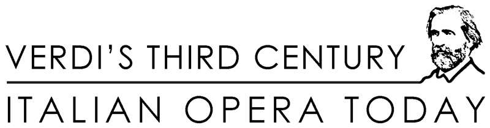

|
| NEW! Program Book and Paper Abstracts (PDF Download, Adobe Reader required) Conference Program (updated October 7, 2013) Wednesday, October 9, 2013 (afternoon) Thursday, October 10, 2013 (morning) Thursday, October 10, 2013 (afternoon) Friday, October 11, 2013 (morning) Friday, October 11, 2013 (afternoon) Saturday, October 12, 2013 (morning) Saturday, October 12, 2013 (afternoon) Sunday, October 13, 2013 (morning) PLEASE NOTE: VENUE CHANGE ON OCTOBER 12. Sessions planned for Saturday, October 12 are taking place at Casa Italiana Zerilli-Marimò (24 West 12th Street) and not at the Humanities Initiative as previously announced. WEDNESDAY, OCTOBER 9, 2013 (AFTERNOON) Casa Italiana Zerilli-Marimò (24 West 12th Street) 5pm • Registration Opens 6pm • "27": A Documentary Film-in-Progress by August Ventura - Screening and Round Table Participants: Stefano Albertini (New York University), Suzanne Cusick (New York University), Francesco Izzo (University of Southampton and American Institute for Verdi Studies), Jane Tylus (New York University), August Ventura (New York) 8pm • Welcome Reception THURSDAY, OCTOBER 10, 2013 (MORNING) Humanities Initiative (20 Cooper Square, 5th Floor) 9:15-10:45 • Visual Aspects in the Opera House and Beyond Mary Ann Smart (University of California, Berkeley), Chair Marco Targa (University of Turin), “Verdi and Silent Cinema” Claudio Vellutini (University of Chicago), “Macbeth and Google Maps: Staging Verdi in the Twenty-First Century” Respondent: Alessandra Campana (Tufts University) 10:45-11:15 • Coffee Break 11:15-12:45 • Staging Verdi Today Helen M. Greenwald (New England Conservatory), Chair Olga Jesurum (Rome, Italy) and Vincenza Busseti (Rome, Italy), “Staging Verdi Today: A Practical Case Study of Props, Costumes, and Other Visual Elements for a Mise en Scène of Rigoletto” Melanie Gudesblatt (University of California, Berkeley), “Riots, Revision, and Rupture: Insurrection in Luc Bondy’s Production of Don Carlos” Respondent: Susan Hilferty (New York University) THURSDAY, OCTOBER 10, 2013 (AFTERNOON) Casa Italiana Zerilli-Marimò (24 West 12th Street) 2:30-4:00 • Verdi in Production Suzanne Cusick (New York University), Chair Alessandra Jones (Hunter College, City University of New York), “An Artifact on Display: The Case for a Politicized Aida” Micaela Baranello (Princeton University), “Verdi, Ritual, and Contemporary Operatic Production” FRIDAY, OCTOBER 11, 2013 (MORNING) Casa Italiana Zerilli-Marimò (24 West 12th Street) 9:30-11:30 • Singers Hilary Poriss (Northeastern University), Chair Flora Willson (King’s College, Cambridge), “London, Paris, New York: Verdi’s global networks c. 1890” Andrew Moravcsik (Princeton University), “The End of Late Romantic Opera? Explaining the Scarcity of Great Verdi Singers” Pierpaolo Polzonetti (University of Notre Dame), “Callas’s Diet / Violetta’s Meal” Respondent: Cori Ellison (Glyndebourne Festival Opera) 11:30-12:00 • Coffee break 12:00-1:00 • Analyzing Verdi William Rothstein (CUNY Graduate Center), Chair David Rosen (Cornell University), “How Verdi’s Minor-Mode Solo Set Pieces End—i, I, or X?—and Why” Liza Sobel (Rutgers University), “Verdi’s ‘Ave Maria sulla scala enigmatica’ ” FRIDAY, OCTOBER 11, 2013 (AFTERNOON) Casa Italiana Zerilli-Marimò (24 West 12th Street) 3:00-5:00 • Round Table - Framing Verdi: Opera and Twenty-First-Century Popular Culture Carlo Cenciarelli (Royal Holloway, University of London), Convenor and Chair Carlo Cenciarelli (Royal Holloway, University of London), “At the Margins of the Televisual: Picture Frames, Loops and Cinematics in Don Carlo” Marco Andreetti (University of Rome “La Sapienza”), “La traviata Strips” Katherine Williams (Leeds College of Music), “ ‘Complete with frock coat and beard’: Rufus Wainwright’s Opera” Marina Romani (University of California, Berkeley), “Verdi’s Forgetful Consumers: Lega Nord’s ‘Va pensiero’ ” William Cheng (Harvard University), “Gaming Opera” 5:00-5:45 • Coffee break 5:45-6:00 • Martin Chusid Award Announcement 6:00-7:15 • Lecture Delivered by the winner of the Martin Chusid Award, whose name will be announced on October 11. Title TBA. SATURDAY, OCTOBER 12, 2013 (MORNING) Casa Italiana Zerilli-Marimò (24 West 12th Street) 9:30-10:30 • Musical Traditions and Italian Opera Andreas Giger (Louisiana State University), Chair Marco Pollaci (University of Nottingham), “Pedagogic Tradition in Verdi’s Early Works: Innovation, Culture, and Politics” Marcelo Campos Hazan (University of South Carolina), “Nabucco’s Band” 10:30-11:00 • Coffee Break 11:00-12:30 • Position Paper and Round Table: Scores and Editions in Today’s Opera House Cori Ellison, Chair Philip Gossett (University of Chicago), “Scores and Editions in Today’s Opera House” Round-table: participants include Linda B. Fairtile (University of Richmond), John Mauceri (New York) SATURDAY, OCTOBER 12, 2013 (AFTERNOON) Casa Italiana Zerilli-Marimò (24 West 12th Street) 2:30-4:30 • Reception, National Identity, and Monuments Pierpaolo Polzonetti (University of Notre Dame), Chair Francesca Vella (King’s College London), “Simon Boccanegra and the 1881 Milan Exposition” Davide Ceriani (Rowan University), “Asserting Identity, Defying Stereotypes: The Reception of Verdi’s Operas in New York at the Height of Italian Migration to America (1908-1915)” Harriet Boyd (University of Oxford), “1951 Verdi and the Cult of Posterity” Emily Richmond Pollock (Massachusetts Institute of Technology), “Life Cycle: Celebrating Verdi at the Sarasota Opera” 4:30-5:00 • Coffee Break 5:00-6:00 • Un ballo in maschera David Rosen (Cornell University), Chair Andreas Giger (Louisiana State University), “Verdi’s Gustavo III and the Critical Edition” Maria Beatrice Giorio (University of Trieste), “Verdi’s Un Ballo in maschera through the Eyes of Two Artists: Oskar Kokoschka and Arnaldo Pomodoro” SUNDAY, OCTOBER 13, 2013 (MORNING) Humanities Initiative (20 Cooper Square, 5th Floor) 9:30-11:00 • Round Table: Verdi and the (New) Media Participants include Micaela Baranello (Princeton University) and Marion Lignana Rosenberg (New York) 11:00-11:30 • Coffee Break 11:30-12:30 • Round Table: Publishing Endeavors: Books, Scores, Recordings, Journals for Verdi’s Third Century Participants include David Foil (New York), Marta Tonegutti (University of Chicago Press), Francesco Izzo (University of Southampton and American Institute for Verdi Studies)
|